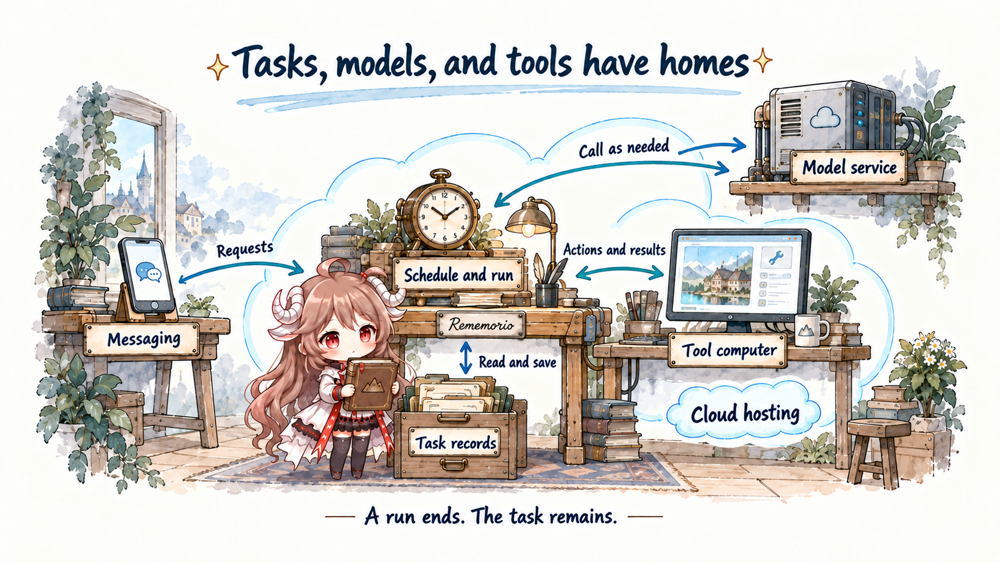
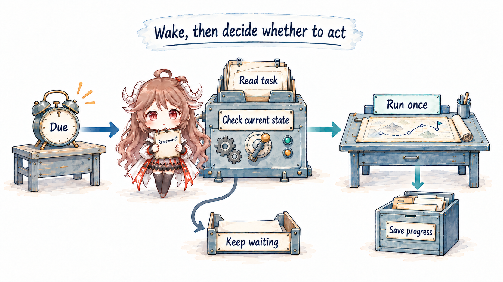
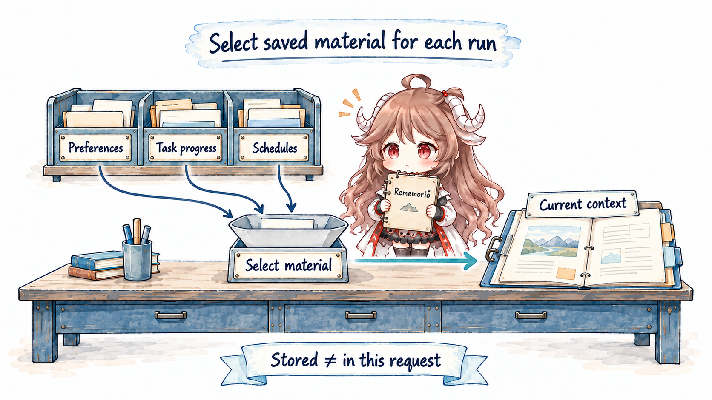
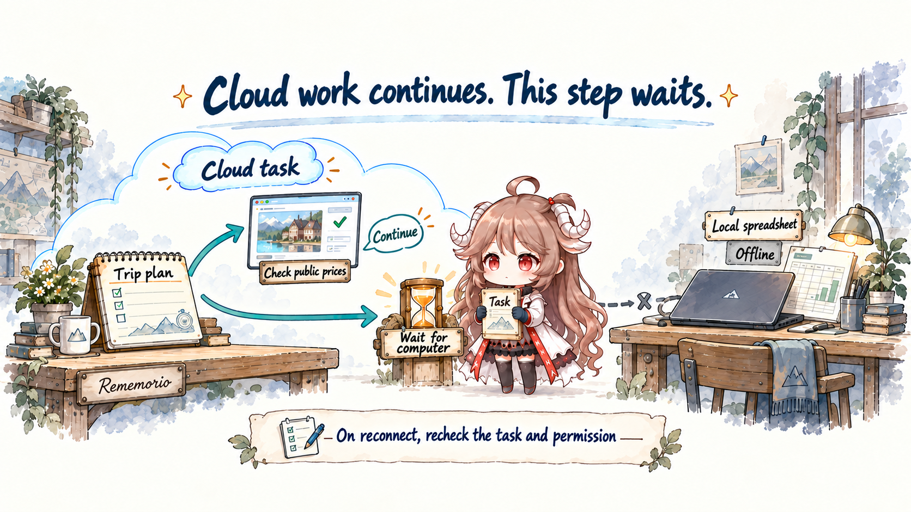
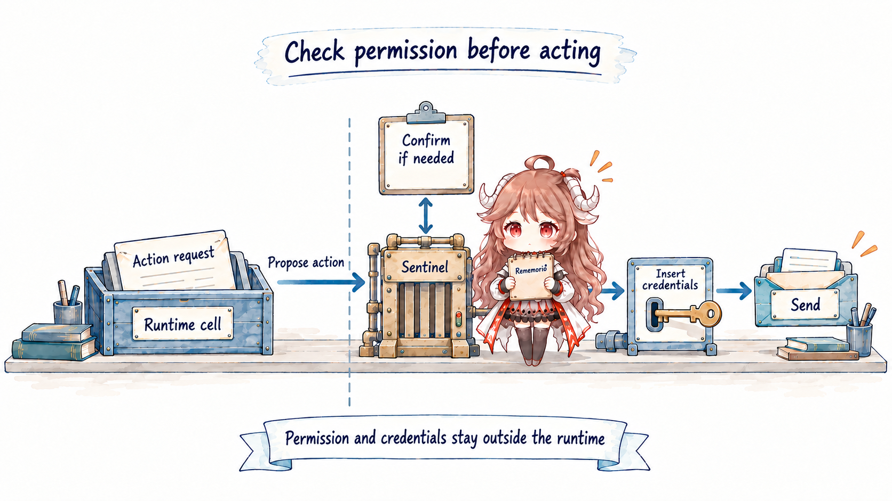
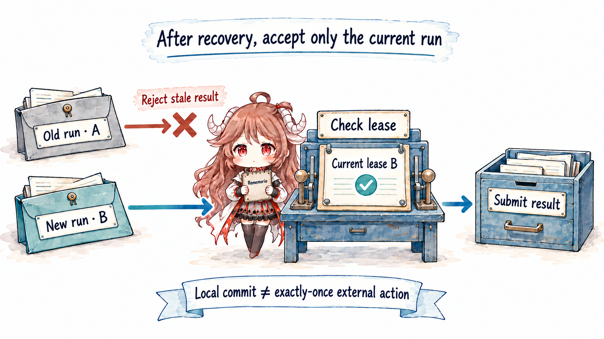
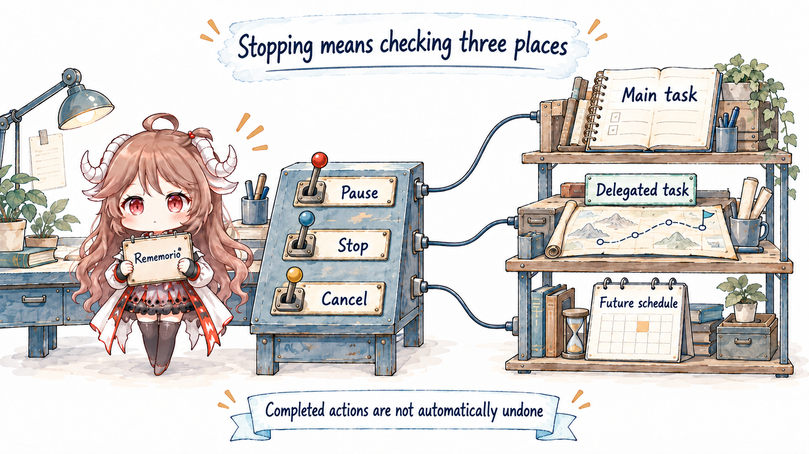

At eleven at night, you ask an assistant to follow up on a Kyoto trip two weeks away, then close your laptop. On the train the next morning, a message arrives: “Hotel B has raised its price; C is still within budget. The inquiry email is ready for your approval.” Those few lines require much more than a well-written itinerary. While you are away, something must retain the responsibility, take another useful step at the right time, and know where to wait for you.
Meta’s Muse and OpenAI’s Dots put that continuing relationship at the center of the product. Start with a practical question: after the laptop closes, which machine performs tomorrow’s price check? Following that question gives frameworks, memory, permissions, and autonomy a concrete setting. The Prompt, Context, Harness, Agent Loop, Outer Loop, and Evals from the first seven chapters become parts of a task that actually spans days.
One trip carries this article: locate the task, model, and tools; follow a cloud service as it wakes work, recovers yesterday’s progress, and waits for a local computer or a person; then handle restarts and cancellation. You should finish able to tell whether an agent can keep working while you are offline, and exactly which steps it can continue. Reading all seven earlier chapters is optional.
Evidence scope: checked on . Official documentation establishes Muse and Dots product behavior. Source links pin nanoMuse 4f644c9 and OpenDots c2569bb, both community projects. The trip, generic deployment diagrams, and acceptance cases are teaching designs, not evidence of unpublished product internals. No real-account, long-running task was executed for this article.
1. Where does the task stay when you leave?
1.1 An answer ends before a responsibility does
Make the request concrete: “I am going to Kyoto in two weeks, with a CNY 6,000 accommodation budget. Prepare three options and check daily. Notify me when the plan exceeds the budget or needs a decision. Let me approve emails before contacting hotels.” The first run can gather information, shortlist options, save sources and observation times, and finish. The trip has not started, yet tomorrow already has something to continue.
The second run need not extend yesterday’s model request. It needs the current budget, shortlist, and instructions so it can check again. No inference has to happen between those runs; the task and its next step must survive. A personal agent, as used here, repeatedly gathers relevant material and acts on ongoing personal responsibilities. Preferences, private information, and permission make it personal. Storage, wake-ups, and recovery carry the responsibility beyond one conversation.
1.2 What does cloud hosting actually host?
If the scheduler, price-checking script, and trip records all live on your laptop, putting the machine to sleep removes what tomorrow’s check needs to run. Calling a remote model API at every step does not make the model service remember to check prices tomorrow. Where the model answers and who starts the next run are separate questions.
Hosting that responsibility in the cloud means a service can retain the task, receive a time or event trigger, and arrange an available execution environment without depending on your current device being online. You send a message from your phone. The service reads the trip record, asks a model to decide the next step, has tools retrieve prices, and saves the result. The phone is an entry point for the interaction. Closing its page need not cancel the task.

Locate the tools separately. A price check might call an API or use a browser on a remote computer; a coding step might enter another sandbox. The model proposes what to do next. Files and browser state live where the tools execute. Closing a chat window, ending a model request, destroying a tool sandbox, and deleting a task record have four different consequences.
This gives “always available” a more useful meaning: the service can pick up work when needed, and saved records let the next run continue. The same process need not stay alive forever, and the model need not think continuously for two weeks. We will call this a cloud-hosted personal agent. Cloud hosting describes where the continuing responsibility lives; personal describes whom it serves.
1.3 A framework can run in the cloud; a product must operate the service
Framework tutorials often begin with a command on your own machine because that is convenient for development. Google ADK’s official deployment guide, for example, also covers Cloud Run, GKE, and self-managed containers. A framework helps assemble the loop and tools. Deployment determines where the program runs. A cloud product must also keep looking after tasks, accounts, resources, and failures.
You can therefore deploy an open-source framework on a rented server and give your trip assistant the ability to continue after you leave your laptop. You take responsibility for operating it. Conversely, an assistant with a web interface may still stop when a required local tool loses its host. Where Does the Agent Work? examines these locations from the framework side. Here the next question is who keeps each handoff dependable over two weeks.
1.4 Muse and Dots: what is disclosed, and which source can we read?
Meta introduced Muse on September 8. Its architecture description specifies a dedicated Linux cloud VM per user, with a browser and storage, to which clients connect. OpenAI introduced Dots on September 29; its documentation likewise describes a personal agent with a cloud computer that can work while the user’s devices are offline. Both have the hosting characteristics discussed here. The disclosures differ in detail and do not establish identical deployment internals.
As of the review date, I have not found an official public repository containing either product’s complete runtime service. Available material falls into official descriptions, independent implementations, and third-party archives. Similar names do not make these interchangeable.
| Material | Used here for | Does not establish |
|---|---|---|
| Official Muse / Dots documentation | Features, user controls, and disclosed architecture | The complete unpublished execution path |
| nanoMuse · GPL-3.0-or-later | Goal scheduling, context assembly, and tool checks in its Python path | Meta Muse source, or identical behavior across every client in this repository |
| OpenDots · MIT | Scheduled tasks, leases, and result submission in a community template | OpenAI Dots internals or complete feature parity |
| MuseAI-Skills · third-party archive | Further research leads | Authenticity, current official behavior, complete source, or a uniform open-source license |
We will build a portable task lifecycle, then inspect the portions implemented by the two community projects. Their code does not combine into an official product replica.
2. Who decides to run again when time is up?
2.1 A wake-up is an opportunity to reconsider
The price check is due the next morning. You might be changing the destination or might already have canceled the trip. A scheduler that simply resends yesterday’s prompt could keep researching an obsolete plan. It should first read the current task, establish that the goal remains active, check whether another run is modifying it, and determine whether this check is still appropriate.

A run should end with verifiable progress, a request for information or permission, or a finding that nothing useful can be done yet. The third outcome can be normal. Waking ten times does not inherently improve an itinerary; it can increase cost and repeated notifications. The scheduler should enable a justified run, rather than keep the model busy indefinitely.
2.2 nanoMuse checks state before choosing a goal
First locate the scheduler. nanoMuse’s MuseService.start()creates the background scheduling task inside the service process. It runs with that service. Starting it on a laptop does not cause the loop to migrate to the cloud when the laptop sleeps. “Supports proactive tasks” still leaves you to establish who keeps the service available and who restores it after an outage.
In the pinned Python service, _goal_scheduler() offers a readable outer loop. It first processes due reminders, goal check-ins, calendar refreshes, event triggers, and mail polling, then checks the time for the next proactive pass. If that time has not arrived, it takes a short nap so changed settings can take effect reasonably soon.
Once the proactive pass is due, the service schedules its next check and tests whether proactive mode is enabled, quiet hours apply, and the main conversation is busy or has queued messages. Unsuitable conditions end that pass. Due memory housekeeping or feed work can consume the opportunity before a goal is selected.
Background check
→ Check reminders, calendar, events, and mail separately
→ Is the proactive pass due?
→ Is proactivity enabled, outside quiet hours?
→ Is the main conversation idle, with no queued message?
→ Does maintenance take this pass?
→ Select one active goal with a next stepThe order matters. Reminder handling and mail polling precede the proactive-mode check. The later continue therefore does not mean turning proactivity off stops all background work. Whether quiet hours restrict a particular activity must be established in that activity’s branch, rather than inferred from the name of one switch.
2.2.1 Hand the goal back to an ordinary run
_pick_goal_for_pass() considers active goals with a next step, prioritizes overdue ones, then compares update times. advance_goal() checks the status again and sends a rendered goal into the main thread. The scheduler selects work; the agent decides how to advance it. Selection does not itself complete a milestone.
For the trip, the service effectively says “check this plan today,” without deciding “rebook the hotel.” Reusing the normal conversation loop simplifies coordination but makes background work compete with foreground activity. Progress can be delayed. This code is not evidence of an exact-time scheduling guarantee.
3. What connects today’s run to yesterday’s work?
3.1 Preferences, progress, and schedules record different things
On day three, you lower the accommodation budget to CNY 5,000. “Prefers quiet rooms” is a reusable preference. “Hotel A now exceeds the budget” is progress on this trip. “Check again at nine tomorrow” is an execution schedule. They can be read together, but deleting one should not leave the fate of the others to guesswork.

Canceling a daily price check would normally stop that schedule while leaving useful quotes and preferences intact. Forgetting a preference requires checking whether saved task summaries still repeat it; a later run could otherwise reintroduce it from those summaries. Storage behavior must answer this question. A conversational “forgotten” is insufficient evidence.
3.2 nanoMuse rebuilds current input from saved records
Application initialization creates separate memory and goal stores. At the start of a run, MuseAgent.run() recalls relevant memories and builds the system prompt. recall_for() and build_system_prompt() impose concrete limits: injected memories are capped, and the first five active goals are rendered with progress, due dates, next steps, and pending plan-change questions.
The entire database is not placed into every request. Selection comes before formatting material for the model. If the new CNY 5,000 budget does not reach the request, even a model that accurately understands the old record can produce an unsuitable plan. Diagnose “it forgot again” by checking persistence, invalidation of the old value, and retrieval first; only then ask whether the model ignored information it actually received.
Dots’ memory documentation likewise distinguishes current context, relevant ChatGPT memory, and the dot’s own notes. Those notes are not a full transcript, and changing ChatGPT memory settings need not change existing notes. This is a product contract, not disclosure of a retrieval algorithm or database schema.
{
"task": "Kyoto trip",
"budget": { "value": 5000, "currency": "CNY", "revision": 2 },
"progress": "Keep hotels B and C; A exceeds the budget",
"next_check": "Tomorrow at 09:00, Asia/Shanghai",
"send_policy": "Approve recipient and body before emailing a hotel"
}Progress should also retain important sources and observation times. A room that was cancelable yesterday may have crossed its deadline today. Old facts can explain history; new actions require checking whether those facts still hold. Persistent memory reduces repeated collection of stable information, while introducing expiry, conflict, and deletion work.
4. What if cloud work needs your computer?
4.1 Work that can continue, and the step that must wait
On day five, you add: “Put the quotes into the trip spreadsheet on my computer and reconcile them against the amounts already paid.” Public prices remain accessible from the cloud, but the file you have not uploaded exists only on the laptop at home. The task now crosses machines. Cloud coordination does not make every tool available in the cloud.
Dots’ computer connection documentation describes this combination: cloud-managed work can use files and tools on a connected computer, which must be online with the ChatGPT app open. It also distinguishes being offline from revoking access. An unavailable computer may still retain its connection permission.

A useful task record would say: “Quotes updated; reconciling payments requires the local spreadsheet, so that step is waiting for the computer.” Independent research can proceed, while a total that depends on the missing reconciliation must wait. The user can distinguish partial progress with a named dependency from failure of the entire task. The service also has no reason to wake the model every minute to reconsider an unchanged obstacle.
When you reopen the laptop that evening, the system should reread the budget, file version, and access permission before continuing. If you canceled the trip from your phone, the old spreadsheet edit should be invalid. If you revoked computer access, reconnecting the device should not restore it. Reachability, an active task, and valid permission are three separate conditions.
4.2 A screen in front of you can still belong to a remote computer
Another location is easy to misread: you open the cloud computer’s screen and sign in to a hotel website yourself. Dots’ documentation distinguishes viewing from taking control, and says its cloud browser does not inherit local browser logins. The screen shows a remote session. Using it has not moved the work onto your laptop.
When “I already signed in” does not resolve a task, first identify the machine, browser, and account. If a step moves to the local computer, establish how its result returns to the task record. Much of the cost of cross-device work hides between windows that look alike. Once files and accounts are available, the next question is whether the prepared email may actually be sent.
5. Who permits an external action after information is found?
5.1 The step from preparing to sending
On day six, the agent has drafted an email to a hotel. Sending transfers content to another person, potentially exposing travel dates or creating a commitment. Knowing the budget and preferences helps write the draft. It does not answer which recipient and content are authorized for this particular send.
In our teaching system, the model proposes an action. An execution component checks the recipient, body revision, and current permission before invoking the mail service. If the body changes after approval, the grant must be matched again. Leaving this to the model’s conversational impression that “the user allowed it earlier” loses those specific conditions.

5.2 Muse’s external checks and nanoMuse’s in-process checks
Meta’s architecture description separates the runtime cell from supporting services. Sentinel authorizes connector actions and network egress, communicates directly with the client for approval, and replaces surrogate credentials at the network boundary after authorization. This is disclosed design, not an independently verified deployment result.
The transferable point is where control sits. A malicious page read inside the runtime may influence a model’s suggestion. It should not thereby gain authority to rewrite permission records or read real credentials. A separately protected check leaves a place to block an incorrect suggestion before it becomes an external action.
nanoMuse uses the same Sentinel name, but that does not establish the same isolation. The Python application constructs a Sentinel object. Its guard() evaluates policy, matches existing grants or asks the user, then permits or denies execution. This is a readable approval flow. An in-process object alone does not prove the external isolation described for Muse.
5.2.1 Read the branches that can change the conclusion
Two conditions matter. Within ASK, mode == "auto" changes the decision to allow; it would be wrong to say every risky call necessarily asks the user. Separately, vault-placeholder handling requires the tool to declare that it accepts secrets. Other tools receive a failure result. Not every tool can exchange a placeholder for a credential. Follow the execution branch beyond a class name or architecture introduction.
Dots’ proactive-research contract gives another useful distinction: that research can read permitted information and keep private notes, but cannot itself message, modify apps, or operate a computer. Follow-up actions require applicable permission. Finding a price increase and emailing about it are separate decisions; explicitly authorized recurring tasks are also a separate category.
6. How does a new run take over after interruption?
Cloud services also restart, update, and replace execution environments. If a worker exits on day eight, the next run needs the saved budget, quotes, and action records. A database file inside a disposable container can still disappear when that container is replaced; retaining it requires a persistent volume, external database, or explicit snapshot mechanism. Backups help recover lost data. Task leases coordinate successive or overlapping runs. These solve different problems.
6.1 Give each run a work claim that can be replaced
Preserving the records leaves another question: who may take over? The old process may have exited or may simply be slow to respond. A new process cannot wait forever, and a late old result must not overwrite newer work. OpenDots demonstrates one approach: assign a random identifier and expiry when claiming a task, then check that identifier again when submitting a result. This temporary claim is a lease.

Runner checks every second, but one instance does not claim another task while it has active work. In a transaction, Store.claim() checks pause and research settings, requeues expired running tasks, and claims either queued work or completed work whose next run is due. The new lease lasts three minutes.
Runner sets a ninety-second timeout and periodically checks whether it still owns the task. owns() and finish() compare database status and lease identity, preventing a replaced old claim from submitting completion. Notice that owns() itself does not compare the clock. A subsequent claim pass handles expired leases; the two mechanisms form the recovery path together.
6.2 A recurring interval is a specific timing policy
This implementation calculates the next scheduled time as successful completion time plus the interval. A longer run shifts the following run later. It is not a fixed wall-clock cron schedule. The failure branch sets failed without scheduling the next time as success does. Requeuing expired leases is not evidence that every failure retries automatically.
Trace the entry point to identify what executes. Runner accepts an injected function; the supplied function finds the task’s Intelligence conversation and calls platform.turn(). The service reads the SQLite file path, and starts and stops Runner with the server. “Local” is relative to that service process: deployed on a server, it uses the server’s storage for scheduling records. Closing the frontend differs from stopping the service. A remote conversation service does not replace this Runner’s scheduling responsibility.
6.3 One committed result does not guarantee one sent email
A lease controls who may update a service-side task record. Suppose a mail service accepts a send, but the process disconnects before saving success. After restart, the stored outcome may still be unknown. Sending again risks a duplicate; marking it failed may mislead the user. This gap lies between the external service and task storage, beyond what the lease alone can eliminate.
Intent recorded → service accepts send → success not yet recorded → crash
Recovery: query the external receipt, or reconcile a supported idempotency key
Retry only after confirming the action did not happen
If confirmation is impossible, keep "outcome unknown" for reviewReading a public quote twice and sending a booking email twice have different consequences. Recovery should depend on the action: a read is usually easier to retry; sending, paying, or booking requires external-state reconciliation first. Recoverable work does not make every action safe to repeat.
6.4 From your own server to many people’s daily work
A personal deployment can use one service to watch a small number of tasks. With many users, every trip record must stay attached to the correct account, and tool environments and credentials must remain separated. These are engineering requirements of a hosted service: verify task ownership when claiming work, limit resources while it runs, and check versions and authority before committing results. A prompt saying “this is user A’s task” cannot provide that isolation.
Schedules also turn individual calls into ongoing expenditure. A five-minute check repeated daily, with unlimited retries after failures, can keep consuming resources while nobody is watching. Give each task runtime limits, retry limits, and a spending budget. Save waiting for a computer, waiting for permission, and finding no change as explicit outcomes. Reconsider work when a condition changes or the next agreed check arrives. Service records should reveal when it last ran, what it cost, what it produced, and why it is currently waiting.
These mechanisms make hosting a service someone can depend on. Putting a framework on a server establishes its location. Making two weeks of waiting, restarts, and permission changes understandable establishes how the continuing responsibility is handled.
7. Continue quietly, and stop the intended work
7.1 Name what is being stopped
On day ten, you postpone the trip. That decision must reach specific objects: the main route-planning task, a delegated hotel investigation, and tomorrow’s price-check schedule. Stopping the visible conversation can leave the other two active. An email already sent will not disappear because the task stopped.

Dots’ controls documentation distinguishes pausing the current main task, stopping delegated work in Activity, and canceling future runs in Scheduled. Stopping does not reverse completed actions. An implementation therefore needs inspectable state for each kind of work and a clear account of what a stop actually covered.
OpenDots’ shutdown path provides a related distinction: it releases this instance’s active leases, requeues the tasks, then signals abortion. That preserves work for server restart. It is not user cancellation. “Execution stopped” can lead to very different future states.
7.2 Make notifications an outcome to evaluate
Two weeks of “nothing changed today” may persuade you to disable notifications. A trip assistant should record its checks while interrupting only for a meaningful change, completion, or a needed decision. Define meaningful at the start: exceeding the budget, losing every suitable option, or still lacking confirmation two days before departure.
A notification should identify the change and evidence: “Hotel B rose by CNY 400 since yesterday and now exceeds your budget. Hotel C still qualifies; its source was checked at nine today.” “An important change occurred” is neither actionable nor easy to grade. Repeated notifications for the same change also need suppression through notification records or stable event identifiers. These are proposed acceptance requirements, not assumptions about every product’s implementation.
7.3 Test changes across time, beyond a single demonstration
The previous chapter’s Evals should now include state changes after time advances. A test environment can use a fake clock, fixed quotes, and simulated mail receipts, avoiding a real two-week wait or messages to hotels. Inspect stored records, external actions, and notifications as well as the final reply.
| Scenario | Expected observation | Inspect first on failure |
|---|---|---|
| Budget changes from 6,000 to 5,000 | Later plans use the new value; old runs cannot overwrite it | Record revision, context selection, submission checks |
| Three checks find no change | Checks are recorded without repeated interruptions | Change comparison and notification conditions |
| Background check overlaps a foreground edit | No action based on obsolete task state is submitted | Concurrency control and rereading state |
| Email sent, followed by a worker crash | Recovery reconciles receipts instead of blindly resending | Action records, idempotency, reconciliation API |
| An old lease returns late | The current record rejects the stale submission | Lease identity and submission transaction |
| The trip and follow-ups are canceled | Main work, delegated work, and future schedules are checked separately | Cancellation propagation and schedule storage |
| Close the messaging page and turn off the personal computer | A check with cloud-accessible inputs and permission still runs; its result is visible from the phone | Actual service location, triggers, client dependencies |
| Cancel the trip while the local computer is offline, then reconnect | The waiting file edit becomes invalid; canceled work is not replayed | Dependency state, task version, checks before execution |
| Reach a retry or spending limit | Further expenditure stops; the reason and completed progress remain available | Budget checks, retry counts, scheduling entry points |
8. Give the task a place that can support it
We can now choose where an agent should run using concrete requirements. Start with the material it must access, then establish when that material is available and who will keep the service running. The following compares deployment choices, not product rankings.
| Task conditions | Suitable arrangement | Responsibility it adds |
|---|---|---|
| Mostly local files; work can finish while you are present | Local execution with an explicit location for saved state | The device and process must be available; material sent to a remote model still needs separate consideration |
| Follow-up must continue while you are offline; inputs are accessible in the cloud | Cloud-hosted scheduling, state, and tools | Cloud data and credential management, ongoing cost, recovery, and notifications |
| Ongoing work includes steps that require the local computer | Cloud coordination with local execution when needed | Track offline dependencies and file versions; recheck the task and permission after reconnection |
Muse and Dots are worth studying because they bring these questions into daily life. They also connect the responsibilities introduced throughout AI Engineering: specify the task, select current material, run tools with permission, arrange later runs, and test the result across time. A framework supplies a way to build the system. An operated service takes care of its ongoing work. Both can belong to the same system.
Return to the laptop you closed that first evening. The next morning’s message has evidence behind it. On day five, the assistant knows which step is waiting for your file. On day six, it leaves the email for your approval. On day ten, you cancel the trip, and tomorrow’s check stops too. The responsibility worth handing over is one that remains accounted for when you leave, can be picked up when you return, and really stops when you change your mind.
Once a task can keep running, each step still needs a decision. Part nine starts with Jev and follows one run record through probabilities, missing evidence, and handoffs when the next step is uncertain.
Sources and further reading
- Meta: Introducing Muse; Muse safety architecture. Product goals and disclosed design, respectively.
- OpenAI: Dots; Tasks and memory; Computers and apps; Controls; Official open-source scope.
- Pinned nanoMuse snapshot: this article covers the
nanomuse/Python path. A separate Harness path exists; behavior is not assumed identical across clients. - Pinned OpenDots snapshot: a community template whose scheduling and conversation-service responsibilities need separate inspection.
- Part 3: prepare current material; Part 4: tool execution and permission; Part 6: hand work across runs; Part 7: verify the result.
- Google ADK: deployment options; Where Does the Agent Work?: further reading on frameworks, execution locations, and state.